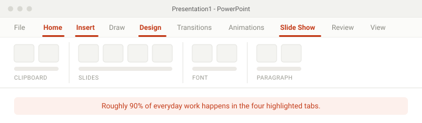

How to Use PowerPoint: The Complete Beginner's Guide
If you have never opened PowerPoint before, this page gets you from a blank screen to a
finished presentation. Start with the eight steps below, then follow the tutorial path to
go from "I can make a slide" to "I can make a deck that looks designed."
Everything here works in PowerPoint for Windows, PowerPoint for Mac, and the free
PowerPoint web app. Where the menus differ, the Mac shortcut is noted.
Work through these in order. The whole sequence takes about 30 minutes the first time,
and about 5 minutes once you have done it twice.
Open PowerPoint and pick a starting point
When you launch PowerPoint you land on a start screen showing templates and recent
files. Choose Blank Presentation for your first deck. Templates are
genuinely useful later, but starting blank teaches you how the pieces fit together —
with a template you learn to edit someone else's work, not to build your own.
Already inside a file? Use File → New to get
back to that start screen.
Learn the ribbon — but only four tabs of it
The ribbon across the top holds every tool PowerPoint has, which is exactly why it
feels overwhelming. Ignore most of it. Four tabs cover almost everything a beginner
needs:
Home — text, formatting, and adding new slides. Insert — pictures, shapes, icons, charts, tables. Design — themes and slide size. Slide Show — presenting.
Roughly 90% of everyday PowerPoint work happens inside those four tabs. The rest you
can learn the day you actually need it.

The four tabs worth learning first. Everything else can wait until you actually
need it.
Add and arrange your slides
Add a slide with Ctrl+M on Windows or
⌘⇧N on Mac — note that it is not ⌘M,
which minimises the window. Or click Home → New Slide. PowerPoint asks what layout you
want — Title Slide, Title and Content, Two Content, and so on. Pick the one that
matches what you are about to write.
The thumbnail pane on the left is your running order. Drag thumbnails up and down to
reorder, right-click to duplicate or delete. Build the whole skeleton first, then fill
it in — reordering is far cheaper than rewriting.
Add your text
Click into a placeholder and type. A placeholder is the dashed box that
says "Click to add title" — it inherits the size, font, and position from your theme, so
always prefer it over a manual text box.
For text that does not belong in a placeholder, use
Insert → Text Box and drag to draw the box before you type.
Keep one idea per slide: if a slide needs two headings, it probably needs to be two
slides.
Go to Insert and pick Pictures (from your computer or
from stock), Shapes for arrows and boxes, or Icons for
clean vector symbols. Drag a corner handle to resize while keeping the proportions; hold
Shift to force it.
Watch your file size. A 5 MB photo is fine on one slide and painful
on forty. Use Picture Format → Compress Pictures before you send the
deck to anyone.
Make it look consistent
This is the step that separates an amateur deck from a professional one, and it takes
about ten seconds. Go to Design, hover over a theme, and apply it — one
theme, applied to every slide at once. Change the color variant and font pair in the same
tab.
Then go through your slides and set each one to a sensible layout. Consistency reads as
competence; mixed fonts and drifting margins read as "hurried."
Add transitions and animation — sparingly
These are two different things, and beginners mix them up constantly.
A transition happens between slides; an
animation happens to an object on a slide.
Pick one subtle transition (Fade or Push) and click
Apply To All so every slide matches. For animation, use
Appear or Fade to reveal a bullet at a time when you
are talking. If you are unsure whether an animation is helping, it is not.
Want the full set of options?How to add animation in PowerPoint
covers motion paths, timing settings, and revealing bullets one at a time.
Save, present, and export
Save with Ctrl+S. Start the slideshow from the beginning with
F5, or from your current slide with
Shift+F5. Click or press the right arrow to advance, and press
Esc to exit. If the deck is going on a computer you do not
control, bring a PDF as a backup.
Use Presenter View. It shows your speaker notes, the current slide, and
a preview of the next slide on your laptop screen, while the projector shows only the
slide. Enable it under Slide Show → Presenter View.
Adding video to a slide? There is a specific way to do it that survives
being opened on someone else's computer — see
how to insert a video in PowerPoint.
Five mistakes beginners make
Each of these has an easy fix, and each one is very visible to an audience.
Putting the whole script on the slide
If the audience is reading, they are not listening to you. Put the headline on the slide
and the detail in your speaker notes.
Leaving the default template untouched
The stock white-and-Calibri look signals "I did not think about this." Applying one theme
and changing the accent color takes seconds.
Reading the slides aloud
The slide is support material, not a teleprompter. Say something the slide does not say.
Animating everything
Every spinning entrance costs you a second of the audience's patience. Motion should
direct attention, not decorate.
Opening the deck cold on someone else's machine
Fonts substitute, videos do not play, and layouts shift. Present from your own laptop, or
export to PDF and test it before the room fills up.
PowerPoint tutorial: where to go after the basics
A tutorial is not a single article — it is a path. Here is the order that actually works,
with a rough time commitment for each stage. Move on when you can do the outcome without
looking it up.
Stage 1
Getting comfortable
Roughly one week of casual use
Ribbon and ribbon tabs in depth
Placeholders vs. text boxes
Slide layouts and the outline view
The 15 shortcuts that matter
Saving, exporting to PDF, printing handouts
You are done when: you can build a clean 10-slide deck without searching for
anything.
Stage 2
Working faster
Two to three weeks
Slide Master and custom layouts
Building a reusable branded template
Alignment guides, distribute, grid
Charts pulled from Excel data
Speaker notes and Presenter View
You are done when: you can produce a fully branded deck in under an hour.
Stage 3
Making it good
Ongoing — this is the design layer
Visual hierarchy and contrast
Typography and color for slides (not documents)
Data storytelling — one chart, one point
Morph transitions and purposeful motion
Editing vector shapes and icons
You are done when: people ask you to make their slides for them.
Frequently asked questions
How long does it take to learn PowerPoint?
About 30 minutes to make your first usable presentation, a week of casual use to stop
needing instructions, and a few weeks to become genuinely fast. There is no deep technical
barrier — the hard part is design judgment, not the software.
Do I need to pay for PowerPoint to follow this tutorial?
No. The free PowerPoint web app at office.com runs in a browser and supports everything in
the eight steps above, including themes, transitions, and Presenter View. The desktop
version adds offline work and a few advanced tools like Morph and custom Slide Masters.
What is the difference between a transition and an animation?
A transition plays between one slide and the next. An animation plays on an object within
a single slide, such as a bullet appearing when you click. Use one transition for the whole
deck, and animate only when it helps the audience follow your point. There is a
full guide to PowerPoint animation
if you want the details.
How do I add a slide in PowerPoint?
Press Ctrl+M on Windows or ⌘⇧N on Mac,
or click Home → New Slide and choose a layout. The new slide is inserted directly
after the one you have selected in the thumbnail pane.
Can I learn PowerPoint for free?
Yes. The PowerPoint web app is free, and the search box on the ribbon — labelled
Tell me what you want to do, or just Search in newer
builds, and reachable with Alt+Q — walks you through most
features in context, which is often faster than a video course.
Once you can build a deck, the highest-value thing you can learn is the Slide Master —
it is what lets you change every slide in a 60-slide deck from one screen. That is the
first topic in Stage 2 above.